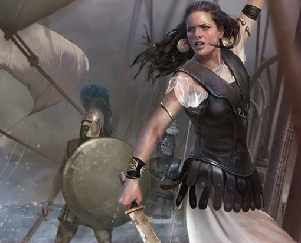
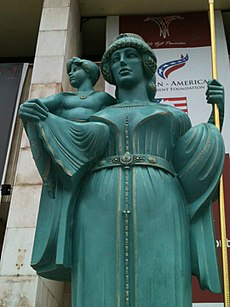

Queen Teuta of Illyria
Queen Teuta against Rome
Historians have trouble agreeing on where Ancient Illyria would place on a modern-day map. Some people it covered the same space as modern Albania, or modern Serbia, or even modern Montenegro. The Illyrians were a strong seafarers, with a taste for piracy. They pillaged across the Adriatic, creating wealth from the goods on trading ships. Illyria was a rich nation and continued to prosper into early 200 BCE, even as the Roman Republic rose to power.
Teuta was the second wife of King Agron, a man who like pillaging, alcohol, and beautiful women. After a great victory, he indulged in all three so much so, that it brought on an attack of pleurisy, and he died a few days later. This left Teuta as regent Queen, since Agron's son from his first marriage was only an infant at the time. Intrestingly enough, Teuta enjoyed pillaging just as much as her deceased husband. Her first act as regent queen, was to authorize the majority of her navy ships to pillage whoever they wanted, as long as they paid taxes. To the Illyrians, piracy was just as much of an industry as trading or fishing. It was considered a justifiable career, and most Illyrians did not see anything wrong with it. Teuta encouraged her people to attack everyone and anyone they could, since it brought in money and new lands.
 Queen Teuta was even known to have led such raids. For years, the Illyrians terrorized those in the Adriatic, impossible to defeat. That is, until someone decided to inform Rome of the feared Illyrians. At that point, the Roman Republic was around 250 years old. Their senate wanted to protect the interests of Roman citizens, so when reports of the Illyrians reached Rome, they immediately sent out two ambassadors, Lucius and Gaius, to create peace with Queen Teuta.
Unfortunately, Lucius was not the best ambassador to send. The two ambassadors approached Teuta during a seige, and pulled her away from the fight. It is said that she was incredibly distracted when the two presented their argument, but once they finished speaking Teuta refused, saying that her government would never regulate the actions of private citizens. Apparently, many historians say this is when Lucius officially "lost it". Unfortunately, there is no account of what Lucius exactly said to Queen Teuta. However, to summarize, he demanded that Teuta should change the customs of Illyria to suit Roman needs. Once the ambassadors were back on the ship to Rome, Lucius was killed by an assassin. It is commonly believed that such an assassin was sent by Teuta. When word reached Rome that an ambassador had been murdered, the Romans sent 200 ships and 20,000 infantrymen to attack the Illyrians. Queen Teuta may have beat Rome's navy, if it hadn't been for Demetrius, a treacherous, high-ranked Illyrian who wanted the throne for himself. He betrayed his queen and his nation, forcing Teuta to surrender Illyria to the Romans.
Today, Teuta is remembered as the Pirate Queen of Antiquity. However, she was not a pirate herself. Rather, she was a strong advocate of her nation's right to piracy. Her navy was considerably powerful, and she pushed Illyria's power into the Ionian Sea. Teuta was a fierce queen and feared by many, so her peace treaty with Rome meant she was no longer allowed to sail out of the harbor with more than two unarmed ships. Not many know of Teuta or even Illyria; however, there is no doubt that she was a strong, fearless woman.